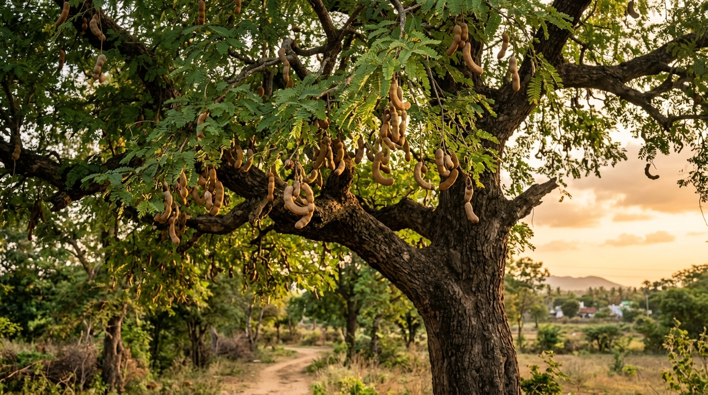
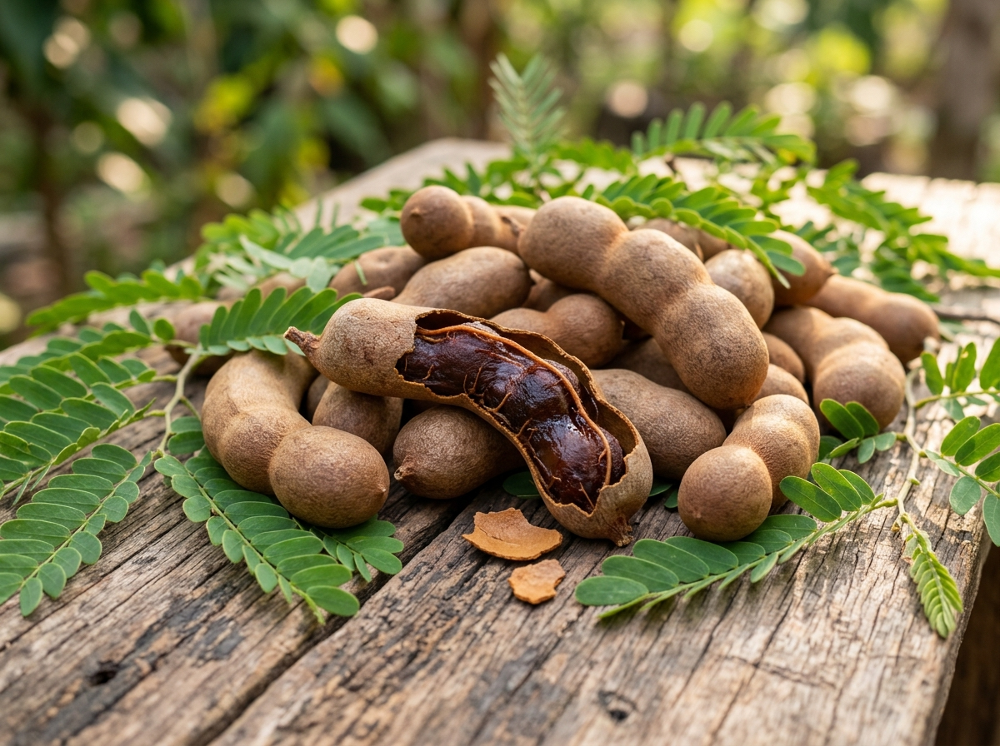
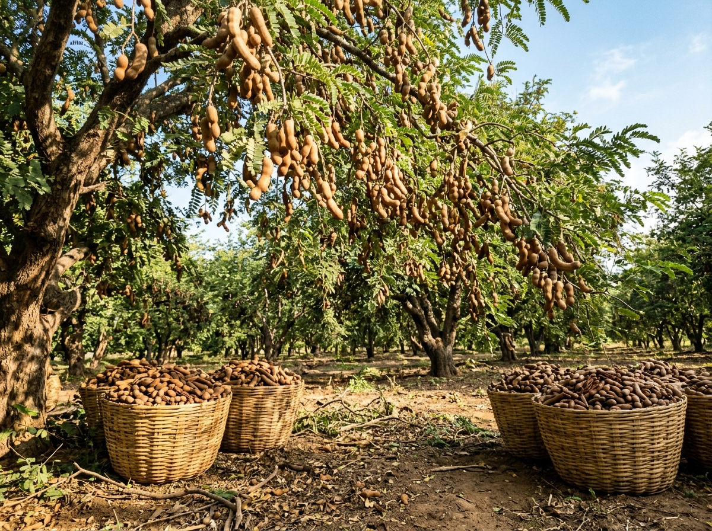
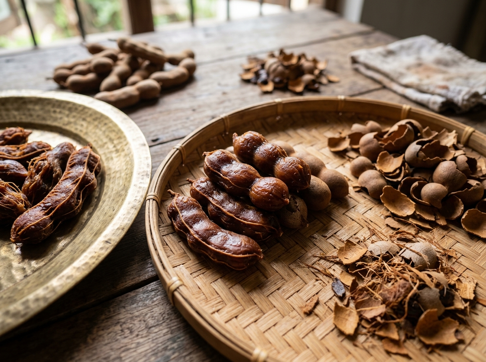
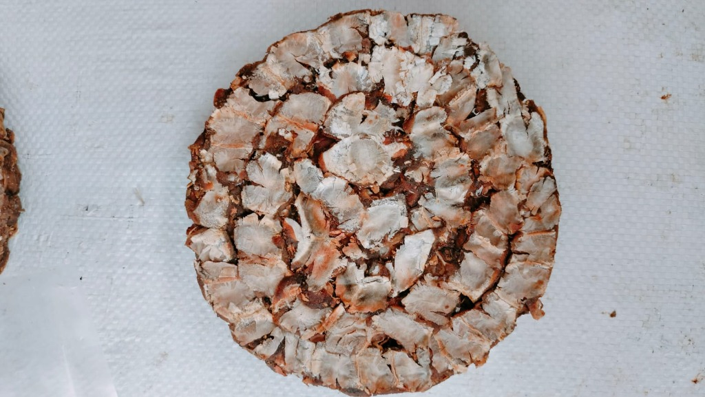

Authentic Tamarind. Traditional Taste.
Rooted in tradition, CS KATHIR brings the natural richness and authentic taste of quality tamarind from Tamil Nadu. Carefully prepared to enrich traditional kitchens with timeless flavor.

Rooted in tradition, CS KATHIR brings the natural richness and authentic taste of quality tamarind from Tamil Nadu. Carefully prepared to enrich traditional kitchens with timeless flavor.

Founded in 1995 by C. Subramani, CS KATHIR represents more than 30+ years in the field of authentic tamarind curation. Rooted in the rich agricultural soil of Dindigul, Tamil Nadu, our focus has always been on meticulously selected tamarind, preserving its natural tanginess and unadulterated character.
For generations, traditional tamarind has formed the soulful backbone of authentic South Indian cuisine. From fragrant rasam to slow-simmered vatha kulambu, CS KATHIR preserves the quintessential aroma, deep color, and rich texture that define our culinary heritage.
Pure, sun-cured tamarind devoid of artificial processing.
Preserving time-honored aroma and distinctive tanginess.
Rigorous grading for dark mahogany pulp and clean texture.
Clean, sealed packaging preserving natural moisture.
Explore the authentic CS KATHIR tamarind showcase. Packed with care to preserve natural flavor and culinary richness.
Carefully chosen ripe tamarind prepared with traditional care. Cleaned, de-seeded, and packed to preserve its natural tanginess, rich consistency, and aromatic purity for daily cooking.
Our traditional family pack delivering rich dark mahogany tamarind blocks. Excellent consistency, well-balanced sourness, and uncompromised cleanliness for memorable home recipes.
Manufactured with dedication by C.S.K. TRADERS in Sadayampatti, Dindigul. Every pack is carefully sealed to safeguard the natural moisture, rich dark amber shade, and traditional aroma of Tamil Nadu tamarind.
Built on a legacy of purity, care, and deep agricultural roots in Tamil Nadu.
“Carefully selected tamarind with attention to natural taste and quality.”
“Preserving the authentic character and traditional taste of tamarind.”
“Carefully packed to protect quality and freshness.”
“Rigorous grading to ensure pure pulp, rich texture, and uncompromised quality.”
Tamarind has been part of Tamil culinary tradition for generations. CS KATHIR carries this familiar taste forward with a focus on quality and authenticity.
Explore our collection celebrating tamarind orchards, harvest traditions, craftsmanship, and packaging.



For dealership, wholesale supply, corporate distribution, or brand inquiries, get in touch directly with our team.
Have a business enquiry? Contact us directly on WhatsApp.
Click the Enquire on WhatsApp button to start a conversation with us.
Opens directly with: “Hello CS Kathir, I would like to make a business enquiry. Please share more details.”